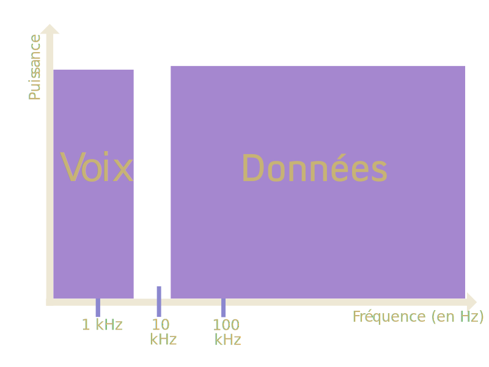
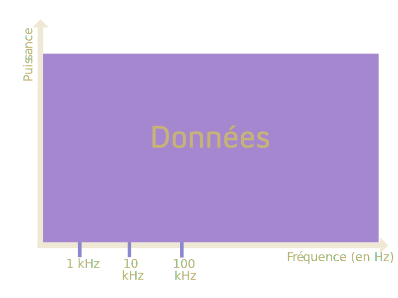
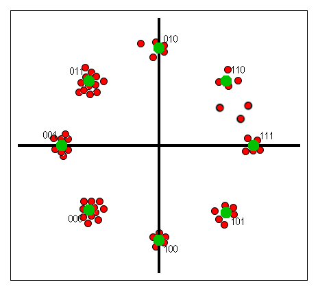
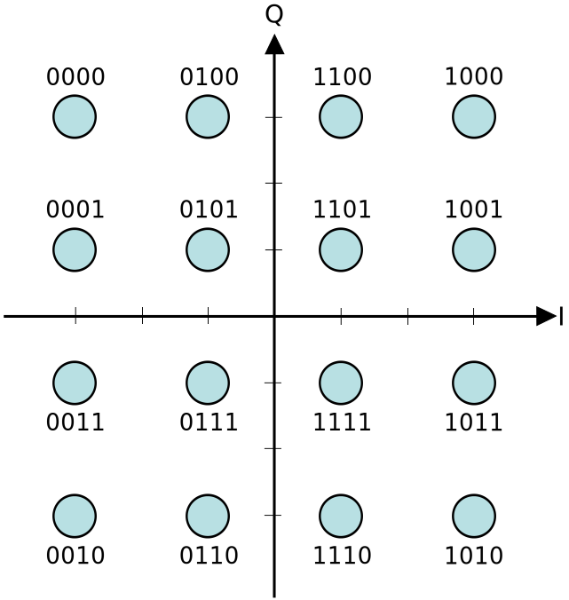
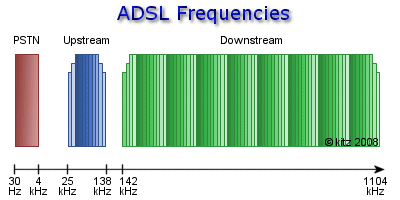

L'ADSL
Pourquoi ?
- Apporter un Internet "rapide" dans les foyers de 60 millions de français,
- À faible coûts,
- Rapidement
La solution :
L'ADSL™
Asymmetric Digital Subscriber Line
- Rapide -> Jusqu'à 20 Mb/s
- Utilise le réseau téléphonique existant
- Pas de déploiement nécessaire !
Comment ça marche ?
Vaste sujet...
Il est où le téléphone là ?
Dégroupage partiel
Dégroupage total
Les NRA
Noeud de Raccordement d'Abonnés

Le kit de survie pour transmettre un signal ADSL:
- Un support adéquat : la paire torsadée
- Une bande passante délimitée, en cohérence avec le support
Le support de transmission : la paire torsadée
- Longues distances (atténuation)
- Conditions "extrêmes"
La bande passante limitée
Oui, oui, l'ADSL ne va pas aussi vite que la fibre...
Une problèmatique supplémentaire: le bruit sur la ligne
La solution : la modulation MAQ !
Une modulation bien pratique pour l'ADSL
Ses caractéristiques :
- Fonctionnement en bande transposée : plusieurs signaux de transmission modulés en QAM sur un support de transmission = augmentation de la capacité brute
- Variation de l'amplitude ET de la phase = encore plus de symboles possibles
Mais surtout, la distance entre les points en augmentée
Les conditions ne sont JAMAIS parfaites
Les modems, c'est magique
Autoconfiguration !
Les modems s'adaptent tous seuls aux charactéristiques de la ligne de chacun !
Calcul de débit en fonction des conditions de bruits
Exemple :
On a plutôt de bonnes conditions (on ne calcule qu'en sens descendant, vers l'abonné) :
- 100 sous-bandes à 8 bits par symbole (conditions moyennes)
- 100 sous-bandes à 10 bits par symbole (conditions satisfaisantes)
Donc :
$(100 \times 8 \times 4000) + (100 \times 10 \times 4000)$
7200000 bits/s
7,2 Mbps